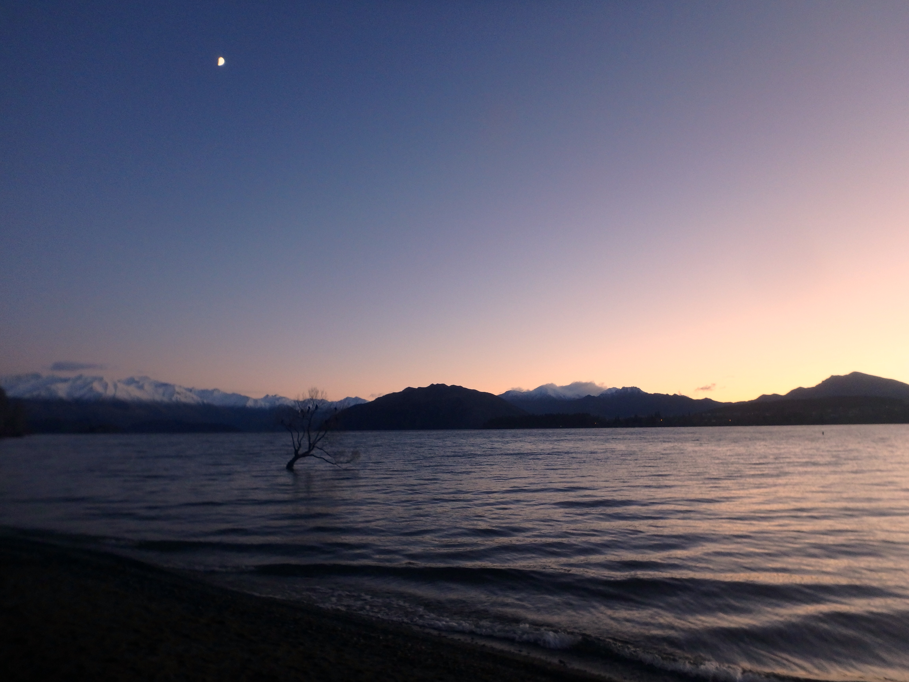
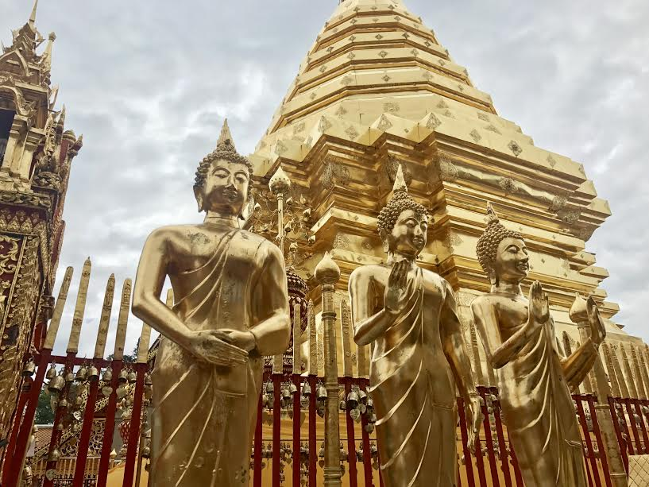
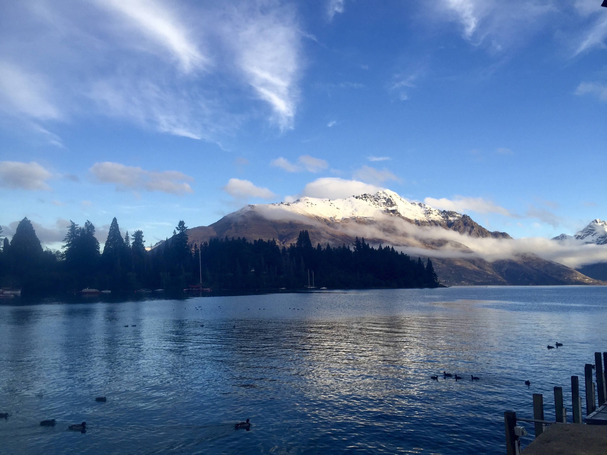
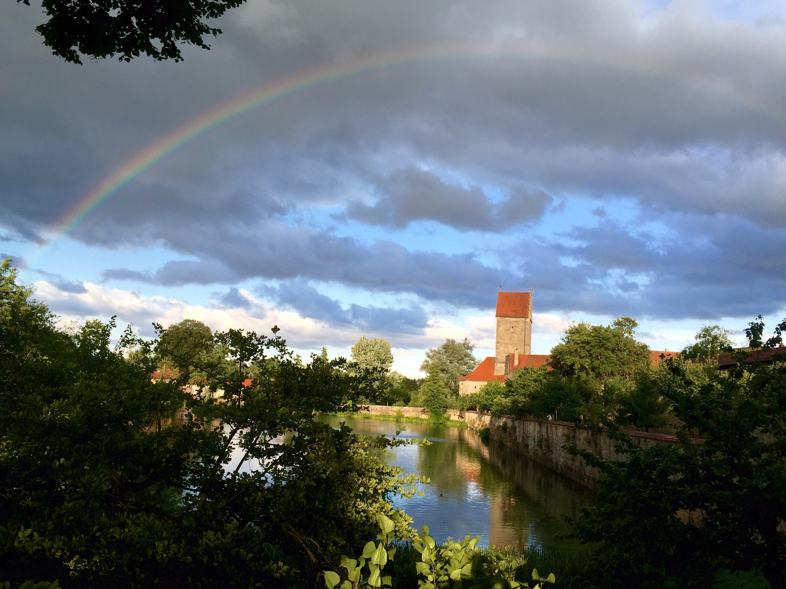

Travel

Although she isn't able to travel during the school year, Rebekah uses her summers to explore the world and try new things. This summer, she went to Thailand to do community service and volunteer at a local school in Chaing Mai. Last year, she went with National Geographic to New Zealand where she took workshops in photography and film from experts in the field. In 2015, Rebekah went on a singing tour of Europe, including Italy, Germany, Austria, France and Switzerland. Rebekah received a partial scholarship this year to travel to Tanzania with Global Leadership Adventures and teach students English skills, as well as help the community.


-------------------Wanaka, New Zealand------------------------------------------Doi Suthep, Thailand-------------------

